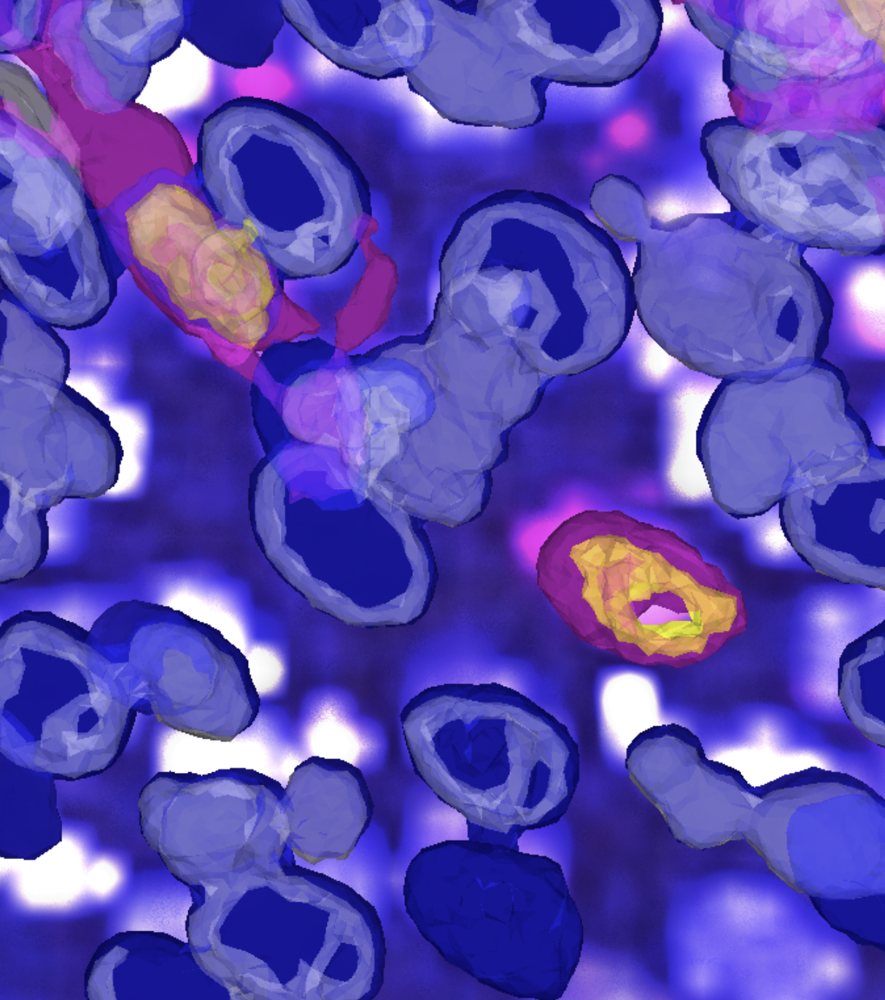
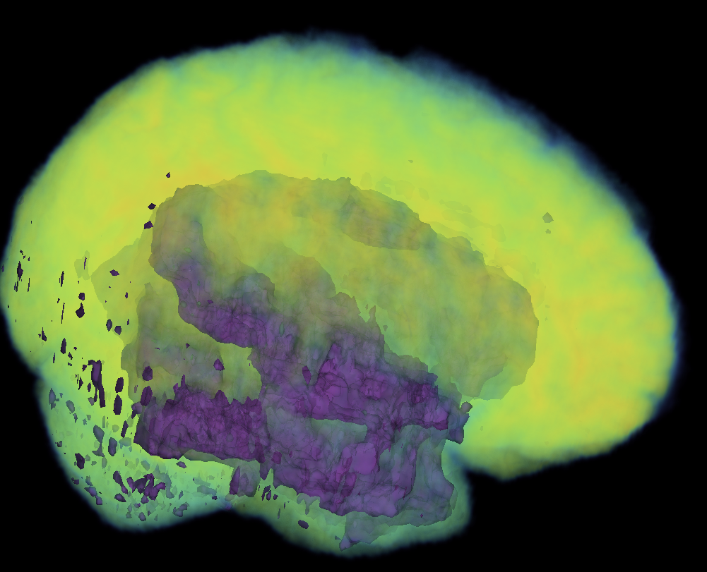
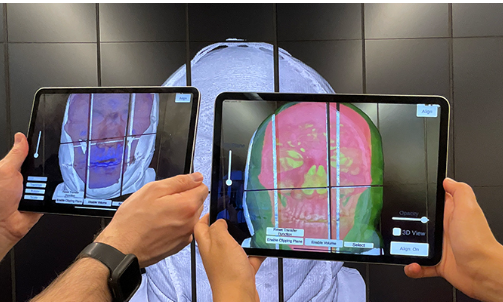
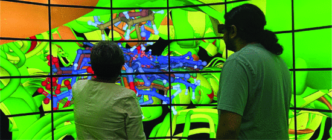
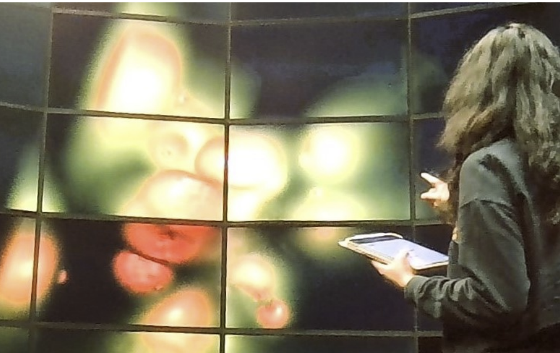

PhD Student
Computer Science, New York University
I am a PhD student in Computer Science at New York University (NYU)’s VIDA Center, where, advised by Robert Krueger and Qi Sun, I am currently researching visualization and visual analytics for 3D microscopy volumes.
I did my MS in Computer Science at Stony Brook University (SBU), where, advised by Arie Kaufman, my research primarily focused on virtual reality visualization techniques for Large Wall Displays (LWDs).


Awards & Honours
- Award of Excellence for "BioSET: Biomarker-based Spatial co-Expression analysis in Tumor environments" - Bio+Med Vis Challenge, IEEE VIS, 2025
- School of Engineering Fellowship - New York University, Tandon, 2025-26
- Graduate Fee Scholarship - Stony Brook University, 2024-25
- Graduate Tuition Scholarship - Stony Brook University, 2024-25
- Graduate International Students' Fee Scholarship - Stony Brook University, 2024-25
- Overall Third in HackUIET 2021 (Hackathon) - UIET, Panjab University, 2021
- Best Solo in HackUIET 2021 (Hackathon) - UIET, Panjab University, 2021
- Overall First in the category "Make Your Own Social Media Website" in HackHer413 2021 (Hackathon) - University of Massachusetts Amherst, 2021
Publications
-

-

-

-

-

Teaching
- Teaching Assistant for Information Visualization - New York University, Fall 2025 - Teaching assistant for the graduate level Information Visualization course with 50+ students.
- Teaching Assistant for Computer Graphics - Stony Brook University, Fall 2024 - Teaching assistant for the graduate level Computer Graphics course with 30+ students.
Art
These are some pages from my many watercolor journals, most of them painted live on location - usually very quickly, but with a lot of heart! Those marked with a "†" are painted using references from the internet, and those marked with a "*" are original works.